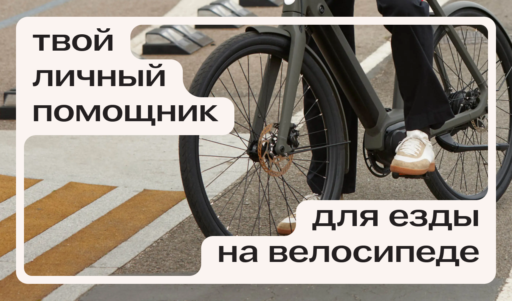
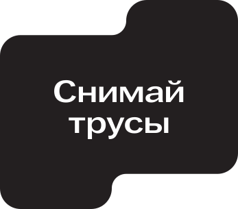
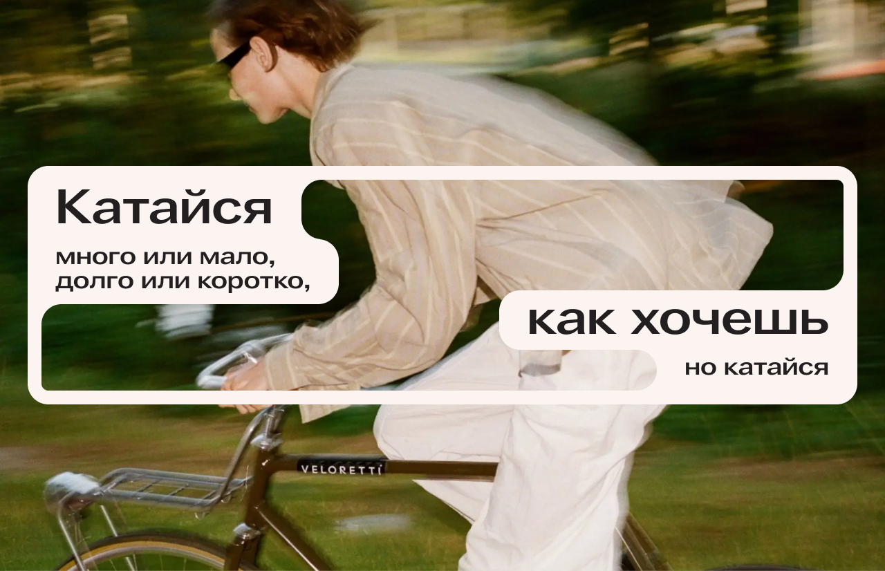

yarn<!doctype html><html lang="en"><head><meta charset="UTF-8"/><meta name="viewport" content="width=device-width,initial-scale=1"/><meta name="og:title" content="Главная"><meta name="og:description" content="Главная"><meta name="og:type" content="website"><meta name="og.image" content=""><meta name="og:url" content="/index.html"><meta name="twitter:title" content="Главная"><meta name="twitter:description" content="Главная"><meta name="twitter:card" content="summary"><meta name="twitter.image" content=""><meta name="twitter:url" content="/index.html"><link rel="icon" href="favicon.svg"><script defer="defer" src="index.f1ecf520775071419e17.js"></script><link href="index.3bc500ba07205816bc09.css" rel="stylesheet"><title>Vell</title><meta name="og:title" content="Главная"><meta name="og:description" content="Главная"><meta name="og:type" content="website"><meta name="og.image" content=""><meta name="og:url" content="/index.html"><meta name="twitter:title" content="Главная"><meta name="twitter:description" content="Главная"><meta name="twitter:card" content="summary"><meta name="twitter.image" content=""><meta name="twitter:url" content="/index.html"><link rel="icon" href="favicon.svg"><script defer="defer" src="index.f1ecf520775071419e17.js"></script><link href="index.3bc500ba07205816bc09.css" rel="stylesheet"></head><body class="bg-black"><header class="O_Header"><nav class="W_HeaderNav"><a class="A_Logo" href="index.html"></a><div class="M_HeaderNavTabs"><a href="articles.html" class="A_NavButton">статьи</a> <a href="lifehacks.html" class="A_NavButton">лайфхаки</a> <a href="routes.html" class="A_NavButton">маршруты</a></div><div class="M_Search"><input class="A_SearchInput" placeholder="Я ищу..." size="20"/></div></nav></header><main class="teaser"><div class="teaser-intro"></div><section class="teaser-block"><div><a class="teaser-button" href="articles-1.html">Статьи </a></div><div class="articles-wrapper"><h2 class="teaser-heading">Просто о самом важном: от безопасности до моды</h2><div class="articles-list"><div><a href="articles-1.html" class="card"><div class="card-info"><h3 class="card-heading">Правила безопасности</h3><div class="card-description">Как получать удовольствие от велика без вреда для себя и окружающих.</div></div></a></div><div><a href="#" class="card"><div class="card-info"><h3 class="card-heading">Перевозим вещи</h3><div class="card-description">Не корзиночкой едины: делимся пятью способами перевозить вещи в поездке на велосипеде.</div></div></a></div></div></div></section><div class="routes-block"><section class="teaser-block"><div><a class="teaser-button" href="routes-1.html">Маршруты </a></div><div class="routes-wrapper"><div><a href="routes-1.html" class="card"><div class="card-info"><h3 class="card-heading">Ищем природу в городе</h3></div></a></div><div class="routes-info"><h2 class="teaser-heading">Подберём путь под любое настроение</h2><div class="teaser-text">Хочешь отправиться на романтическую прогулку в парке или успеть объехать за&nbsp;день весь город?</div></div></div></section></div><section class="teaser-block"><div><a class="teaser-button" href="lifehacks.html">Лайфхаки </a></div><div class="lifehacks-wrapper"><div class="lifehacks-info"><h2 class="teaser-heading">Нет времени на чтение? Мы собрали полезные советы в карточках</h2></div><div><a href="lifehacks.html" class="card"><div class="card-info"><div class="card-description">Велосипедки — не просто шорты. Они сделаны из дышащей и не сковывающей движения ткани, а также имеют специальные уплотнения для гигиены и защиты от кочек. Наличие нижнего белья может привести к натиранию и поту.</div></div><div class="card-keywords"><div class="card-keyword">экипировка</div></div></a></div></div></section><div class="teaser-ending"></div></main><footer class="S_Footer"><div class="S_FooterWrapper"><section class="O_FooterRow"><section class="W_EmailWrapper"><form action="#" class="W_EmailSection"><h2 class="A_EmailHeader">Будь в курсе новостей</h2><div class="M_EmailForm"><input type="email" placeholder="Введи свой e-mail" class="A_EmailField"> <button type="submit" class="A_EmailSubmit">Подписаться</button></div></form></section><section class="M_FooterNav"><a href="articles-1.html" class="A_FooterNavButton">статьи</a> <a href="lifehacks.html" class="A_FooterNavButton">лайфхаки</a> <a href="routes.html" class="A_FooterNavButton">маршруты</a></section></section><section class="O_FooterRow"><div class="M_FooterSocial"><div class="A_FooterSocialLink"><a href="https://t.me/+iCtcV4CG7UphMWYy"></a></div><div class="A_FooterSocialLink"><a href="https://vk.com/vellmsk"></a></div><div class="A_FooterSocialLink"><a href="https://dzen.ru/vell_msc"></a></div></div><div class="A_HseLogo"></div></section></div></footer></body></html>